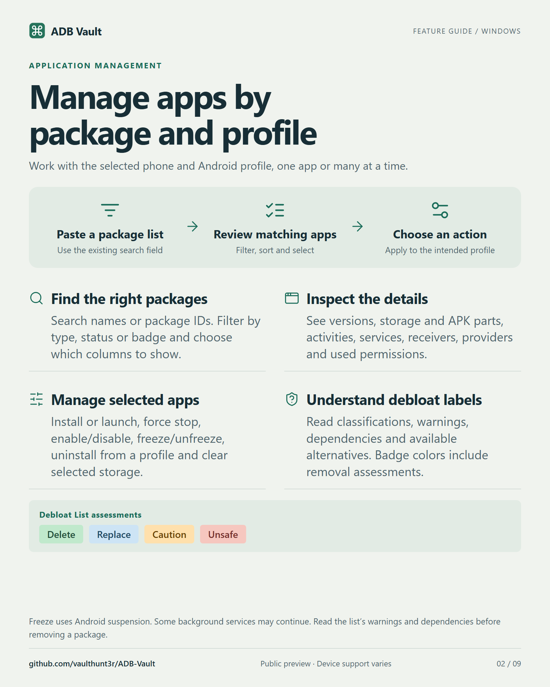
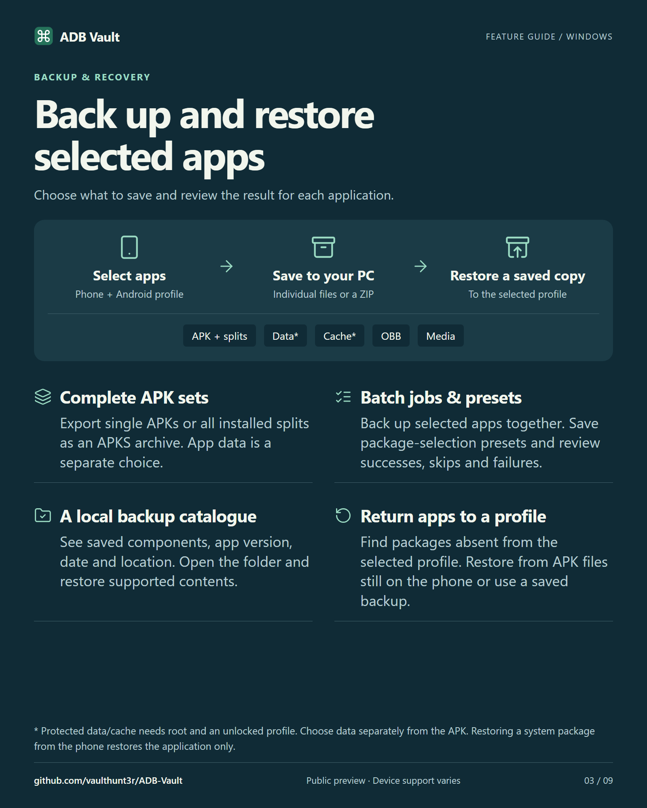
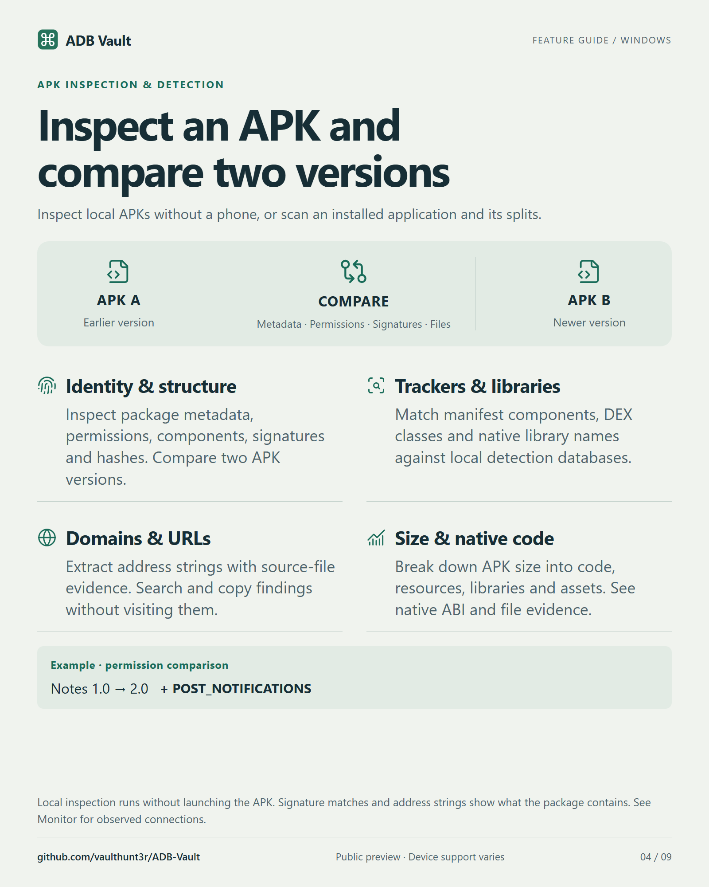
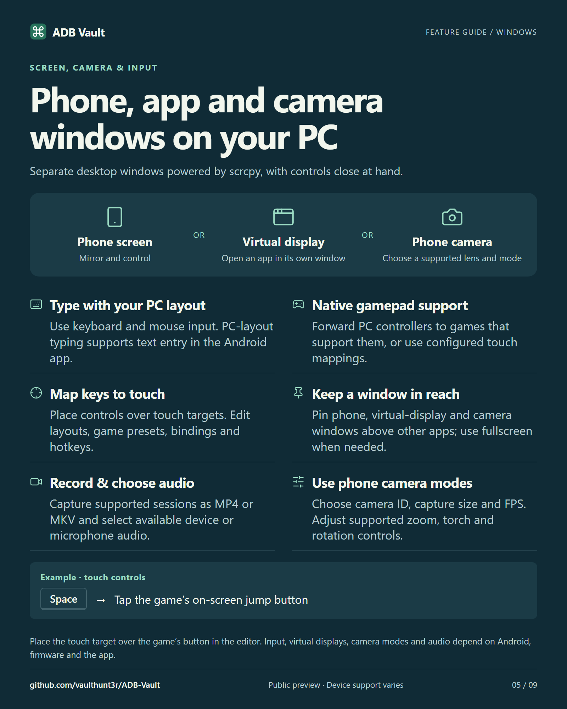
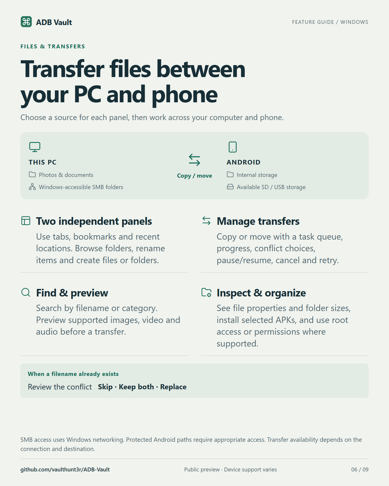
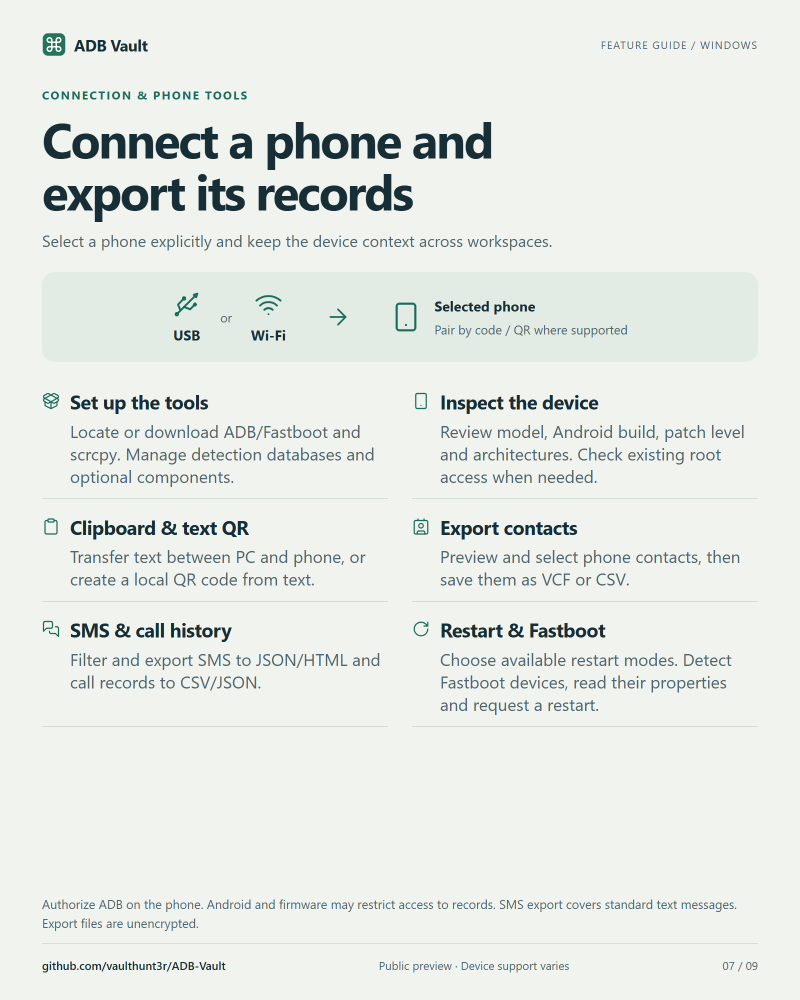
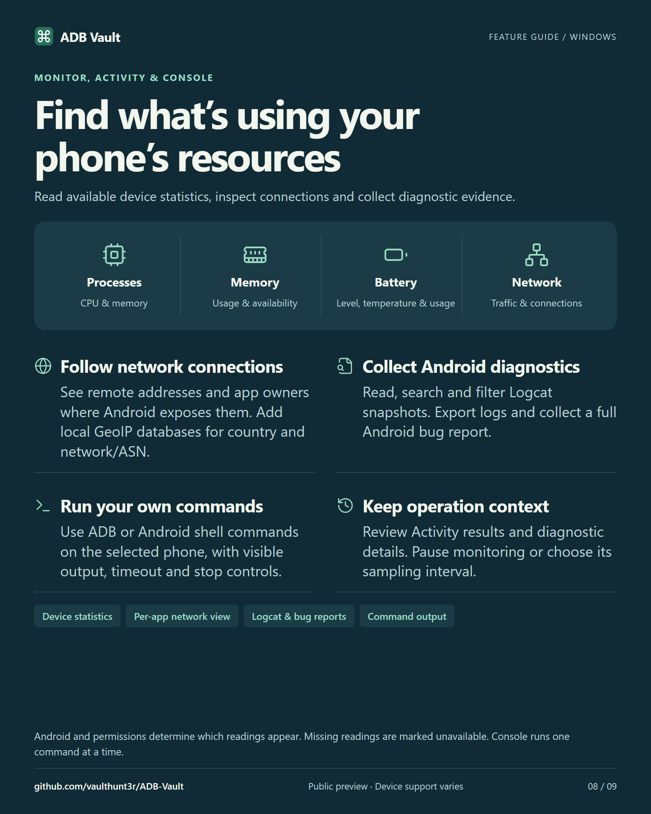
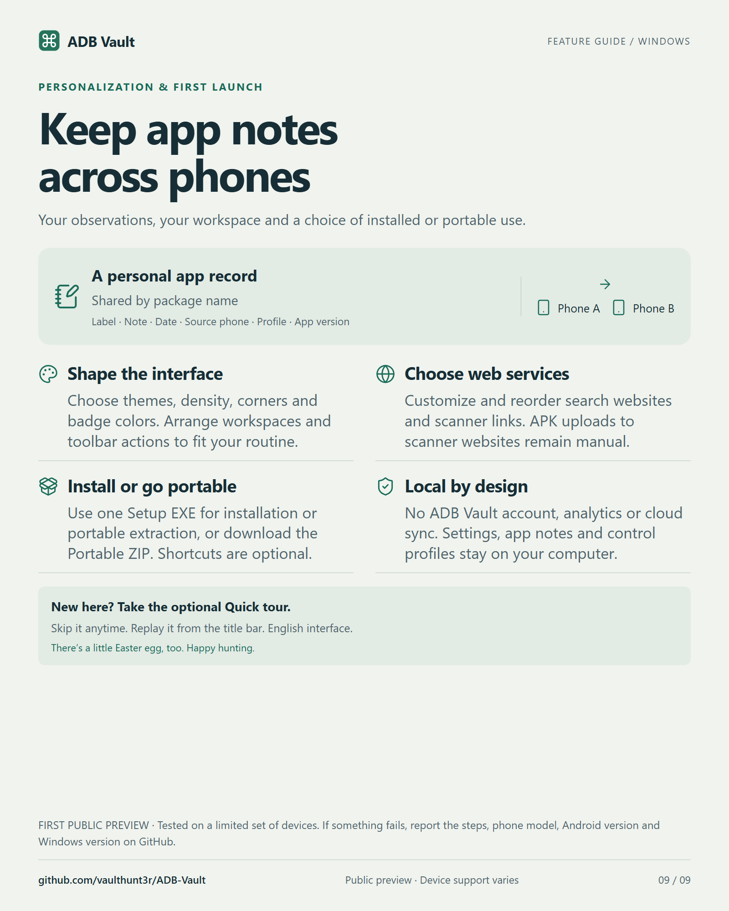

Windows 10/11 x64 / Public preview
Manage Android
from Windows.
Inspect an APK, back up an app or open it in its own desktop window. See how in the two-minute tour.
v0.1.0 · English interface · Release notes & checksums
02 / Illustrated guide
Explore the nine cards
Choose a topic or click the card to turn the page. Use “Open full size” to read the original.

















03 / Compatibility
First public preview
Testing has covered a limited set of phones. Android version, firmware and permissions affect what each feature can do. Back up important apps and files before making changes.
If something fails, include the steps, phone model, Android version and Windows version in your report.
Report an issue ↗